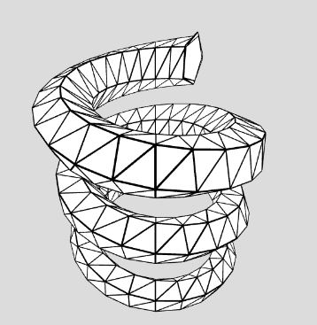

如果想要讓 2D 圖形擠出時有點曲線變化，那麼可以從旋轉擠出的實作開始嘗試，雖然相對而言，這是最簡單的曲線擠出，然而也可以有許多變化應用，例如這邊最終將完成的 rotateExtrude，可以做到以下的效果：

先從基本的圓開始好了，可以將 2D 圖形每個頂點的 x 分量，都加上指定的半徑，然後先繞 y 軸旋轉一圈，再繞 x 軸轉 90 度：
上面的範例中，可以指定 fn，也就是一個圓是由幾個邊組成；基本上你想繞哪個軸轉動都可以，選擇先繞 y 軸轉動的原因在於，2D 圖形是定義在 xy 平面，繞 y 軸轉動的話就不用再翻轉 2D 圖形，畫完後再繞 x 軸轉 90 度，就成了繞 z 軸轉動了。
只不過，單純繞一個圓來擠出，好像沒什麼特別，若可以指定繞的角度就好了，這稍微麻煩一些，因為使用者指定的度數，不一定正好是徑度 TWO_PI / fn（或角度 360 / fn）的倍數，因此要分兩個部份處理：
接下來就看你要加些什麼參數了，例如 scaling、twist 或 height，要注意的是，哪些轉換必須先進行，例如 scaling、twist 就要先進行，後續才可以移至半徑處來進行切面的轉動計算：
加上了 height 後的範例，可以讓旋轉擠出的同時又有拉長的效果，就像螺旋擠出的效果，一個函式有太多參數，實作上或使用上可能會複雜化，或許可以將這類功能重構出來，獨立為螺旋擠出的函式，這就實際需求如何再來決定了。
有了這個 rotateExtrude，要畫個莫比烏斯帶也就簡單了：